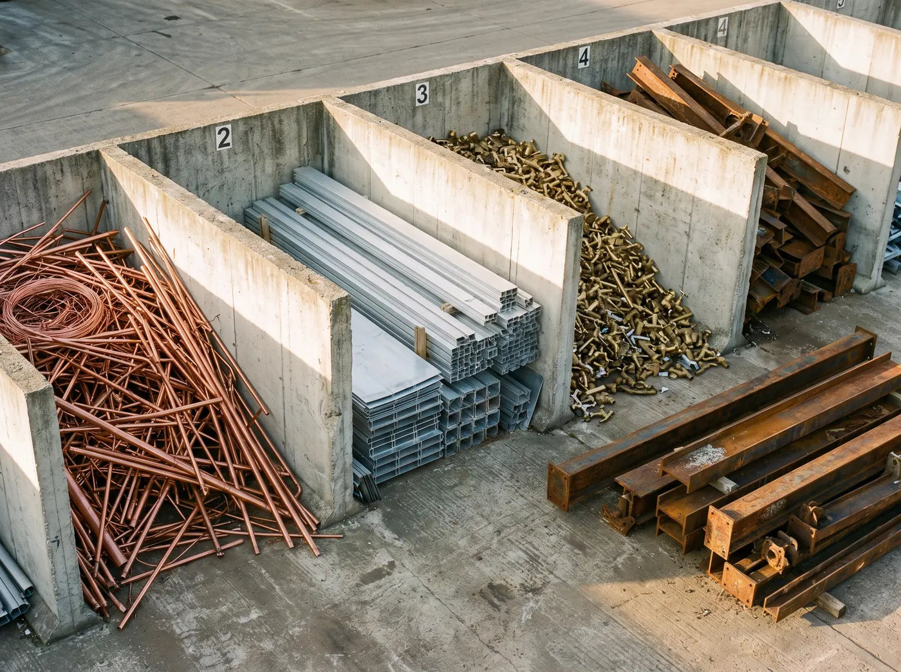

What we take
Mostly metal? Bring it in.
Ferrous and non-ferrous, from a few offcuts to a whole farm clean-up. Sort the good metals out and drain anything with fuel or oil before you come.
Metals
Worth sorting before you come.
Clean, separated metal is worth more than a mixed pile. If you can, keep each of these apart from the steel.
By where it comes from
What people bring in.
Items marked Call first need a quick call so we can tell you how to prep them, or whether to book a pickup instead.
Farm
- Fencing wire and barbed wire
- Star pickets and steel posts
- Gates, panels and cattle yards
- Corrugated iron and roofing
- Steel troughs and empty tanks
- Old implements and parts
- Machinery, drained Call first
- Silos and sheds, cut down Call first
Trade and building
- Steel offcuts, RHS, angle and plate
- Reo bar and mesh
- Roofing, gutter and downpipe
- Copper pipe and fittings
- Cable and wire
- Aluminium windows and doors
- Hot water units, drained
- Pallet racking and shelving
Household
- BBQs, gas bottle removed
- Bikes and trampolines
- Filing cabinets and steel furniture
- Lawnmowers, fuel and oil drained
- Pots, pans and cutlery
- Washing machines and dryers
- Fridges, freezers, air-cons Call first
- Car bodies and parts Call first
Before you load up
Save time at the gate.
Sort the good metals
Copper, brass, aluminium and stainless in their own bins or bags, apart from the steel.
Drain it
No fuel, oil or water left in mowers, machinery, engines or tanks.
Bring photo ID
Victorian law requires us to record who sells us scrap, and any payment is by bank transfer.
We can't take
Please leave these at home.
- Asbestos, or anything that might contain it
- Chemicals, paint and hazardous waste
- Full, charged or hired gas cylinders
- Anything still holding fuel, oil or liquid
- General rubbish, timber, soil and green waste mixed in
- Metal you can't show is yours to sell
Not sure? Call Sean on 0418 524 602 before you load up.